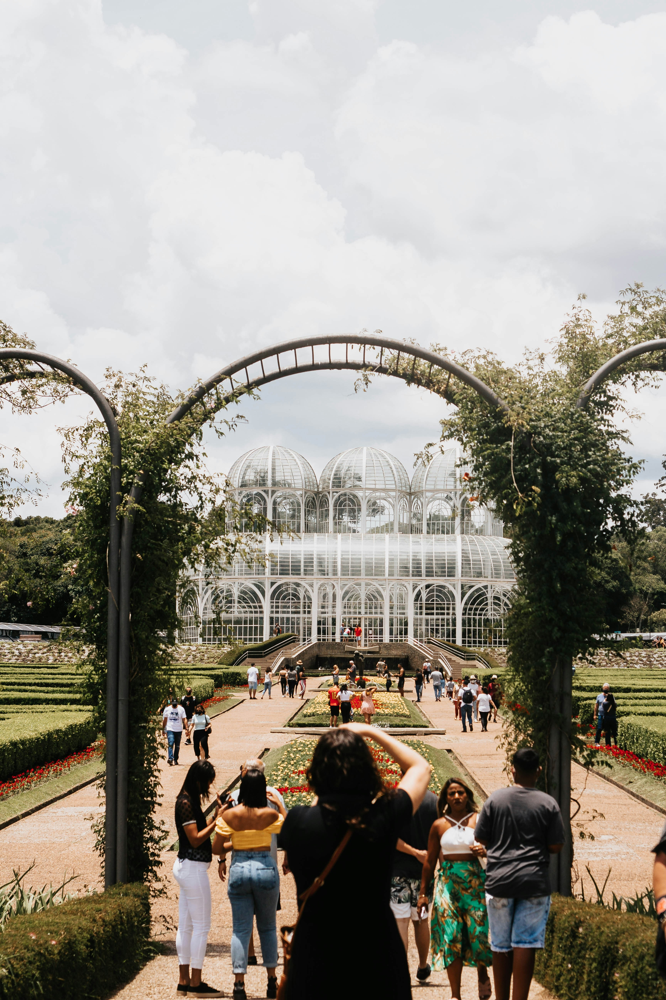
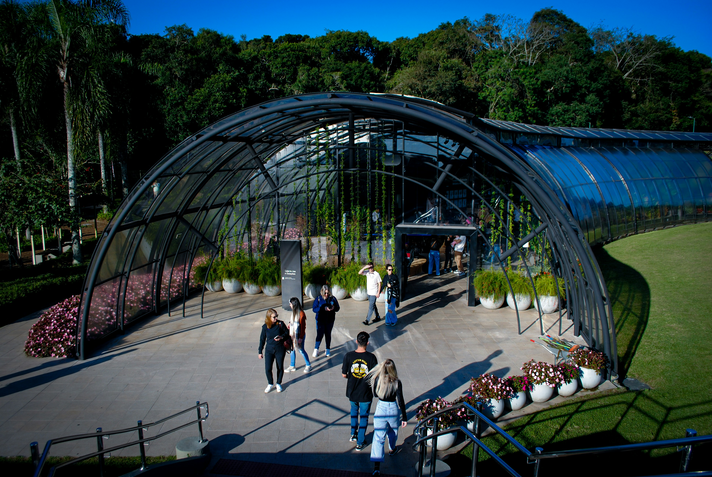
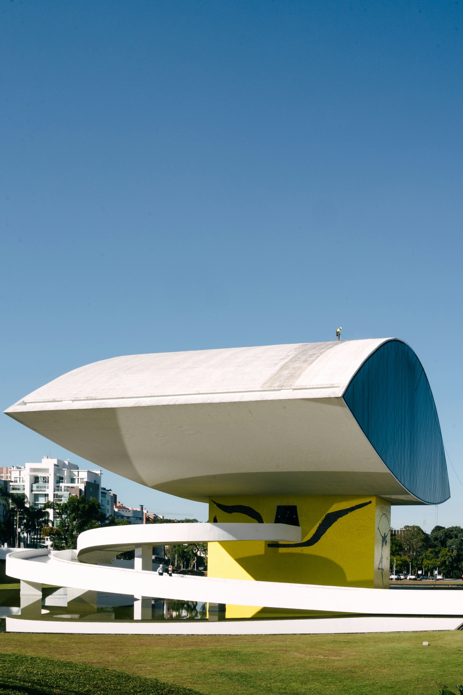

Sobre o tema
vamos conhecer os pontos turíticos que mais chamam a atenção de visitantes na cidade de Curitiba.

Contexto histórico
O Jardim Botânico, a Ópera de Arame e o Museu Oscar Niemeyer (MON) desenvolveram-se em Curitiba, capital do Paraná, entre 1978 e 2002. Cada um nasceu de projetos urbanísticos ou requalificações de áreas degradadas liderados por prefeitos e arquitetos marcantes, transformando-se em grandes ícones turísticos e culturais do estado.

Importancia cultural
são os maiores ícones culturais e turísticos de Curitiba e do Paraná. Eles representam a identidade da capital unindo inovação urbana, preservação ambiental, arquitetura de vanguarda e o acesso democrático à arte e à natureza. Eles unem inovação urbana, respeito à natureza e valorização da arte. Esses locais transformam cartões-postais em símbolos de pertencimento e memória para a população local e os visitantes.
